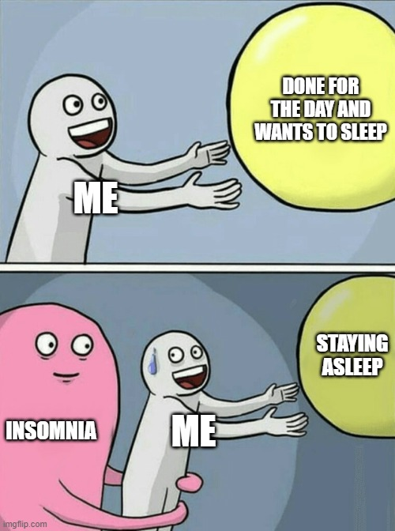
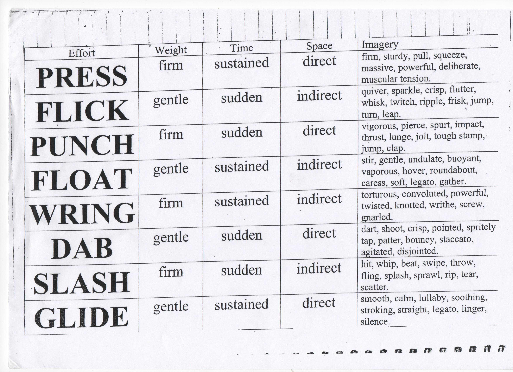
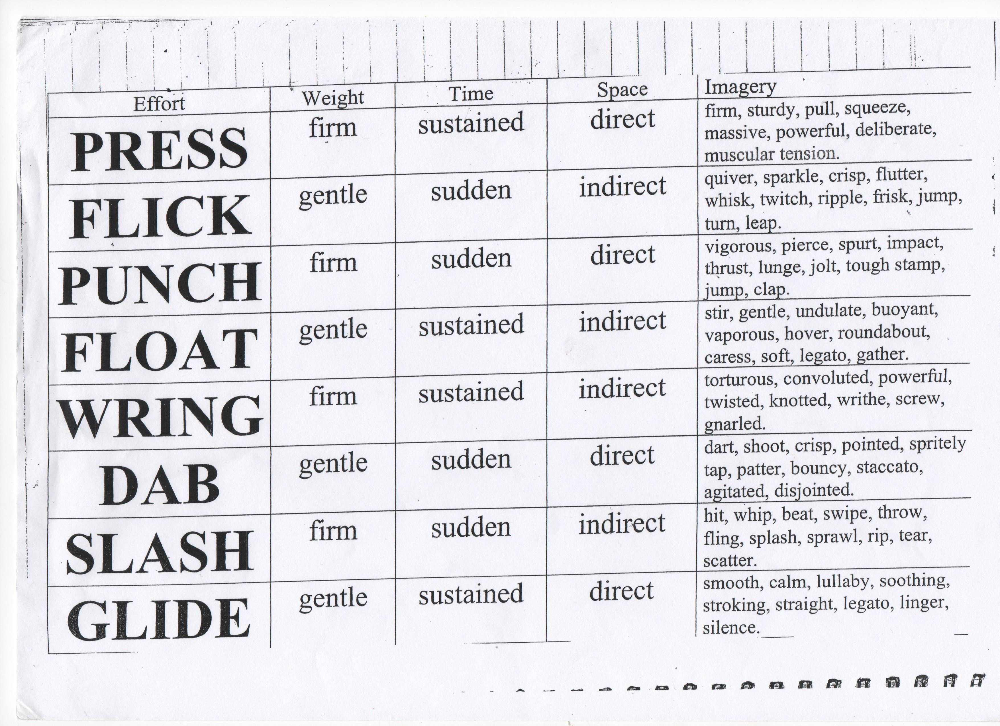

Monica Wu
My name is Monica Wu, and I am a passionate marketing professional with a deep understanding of the ever-evolving landscape of the industry. With 5 years of experience in marketing, I have honed my skills in various aspects of the profession, enabling me to contribute effectively to the growth and success of the organizations I work with.
From a young age, I developed a keen interest in understanding consumer behavior and the strategies that businesses use to engage their target audiences. This curiosity led me to pursue a degree in marketing, where I gained a solid foundation in the principles and theories of the field. Through internships and practical projects, I had the opportunity to apply my knowledge and develop a practical understanding of marketing strategies.
Throughout my career, I have worked with diverse companies across different industries, ranging from start-ups to well-established corporations. These experiences have provided me with valuable insights into the unique challenges and opportunities that each industry presents. I have had the privilege of working on various marketing campaigns, product launches, and brand positioning initiatives, each requiring a tailored approach to meet the specific needs of the business and its target market.
One of my greatest strengths as a marketing professional is my ability to think creatively. I constantly strive to come up with innovative ideas and strategies to differentiate my clients' brands and captivate their audiences. Whether it's developing compelling messaging, designing impactful visuals, or brainstorming unique marketing campaigns, I am always pushing the boundaries to deliver exceptional results.
In addition to my creative mindset, I possess strong analytical skills. I enjoy diving deep into data and market research to uncover valuable insights that drive informed decision-making. By leveraging data-driven strategies, I have been able to optimize marketing campaigns, identify emerging trends, and allocate resources effectively, ultimately maximizing return on investment and driving business growth.
As technology continues to reshape the marketing landscape, I have embraced the digital realm and honed my skills in various digital marketing channels. From social media marketing and content creation to search engine optimization and email marketing, I have stayed up to date with the latest trends and tools to effectively reach and engage target audiences in the digital space. I understand the importance of integrating traditional and digital marketing approaches to create cohesive and impactful campaigns that deliver results.
Beyond my technical skills, I am a strong communicator and collaborator. I believe in the power of effective teamwork and building strong relationships with stakeholders, both internal and external. By fostering open lines of communication and working closely with cross-functional teams, I have been able to align marketing initiatives with broader business goals and ensure seamless execution.
Outside of my professional life, I am an avid learner and a firm believer in continuous personal and professional development. I actively seek out new industry trends, attend workshops and conferences, and engage in online communities to stay ahead of the curve and bring fresh perspectives to my work.
In summary, my journey as a marketing professional has been characterized by a blend of creativity, analytical thinking, and adaptability. I am committed to delivering exceptional results for the organizations I work with, driving growth, and fostering strong connections with target audiences. With a passion for marketing and a dedication to ongoing learning, I am excited to continue making a meaningful impact in the ever-evolving world of marketing.
Experience
Cashier, Yogurtista
• Serve, churn yogurt
• Clean, mop, sweep, wipe, disinfects
• Money counting
Teaching Assistant
• Lead activities and projects for students
• Watch over students
• Assist teachers with activities
• Create projects and models
Education
UC Riverside
University of California Riverside
University of California Riverside
Portfolio



